FVTool とアプリケーション プログラム インターフェイス (API) を使ったフィルター解析
Filter Visualization Tool (FVTool) は、Signal Processing Toolbox™ で利用可能なグラフィカル ユーザー インターフェイスです。このツールを利用して、Signal Processing Toolbox のすべてのフィルター解析関数を 1 つの Figure ウィンドウで利用することができます。
FVTool は、コマンド ラインから GUI を使って利用可能な Application Program Interface (API) も含みます。これにより、FVTool と他のアプリケーションを統合することができます。
目次
FVTool の起動
0.4 の通過帯域周波数 (1 に正規化)、0.6 の遮断帯域周波数、1dB の通過帯域リップル、80dB の遮断帯域の減衰量を持つローパス フィルターを作成します。ここでは、いくつかの Signal Processing Toolbox のフィルター設計方法を使用してフィルターを作成し、結果を FVTool で解析します。
ローパス等リップル FIR フィルターを設計します。
f = fdesign.lowpass('Fp,Fst,Ap,Ast',.4,.6,1,80); Hd1 = design(f,'equiripple');
ローパス楕円 IIR フィルターを設計します。
Hd2 = design(f,'ellip');
フィルター オブジェクトを使用して FVTool を起動し、ハンドルを FVTool に返すことで、同じ FVTool Figure を再使用できます。
hfvt = fvtool(Hd1, Hd2);
set(hfvt, 'Color', [1 1 1])
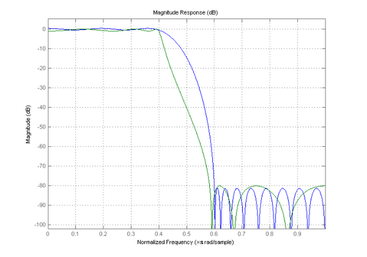 フィルターの追加と削除
両方のフィルターが仕様を満たしていますが、チェビシェフ II 型設計がどの程度正しく動作するかを確認します。
フィルターを FVTool に追加するには、ADDFILTER メソッドを使用します。
Hd3 = design(f,'cheby2');
addfilter(hfvt, Hd3);
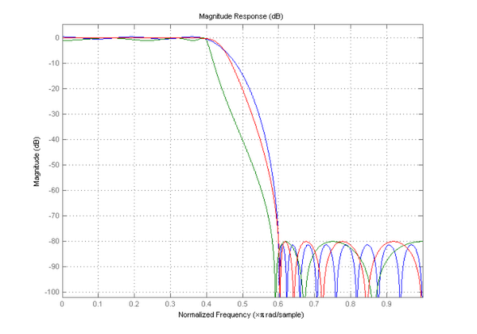 フィルターに属しているプロット上の線を識別できるように、凡例を追加します。凡例を設定するには、FVTool の LEGEND メソッドを使用します。
legend(hfvt, 'Equiripple', 'Elliptic', 'Chebyshev Type II');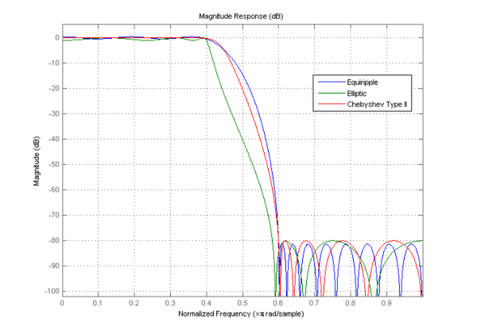
FVTool からフィルターを削除するには、DELETEFILTER メソッドを使用して、削除するフィルターのインデックスを渡します。
deletefilter(hfvt, [1 3]);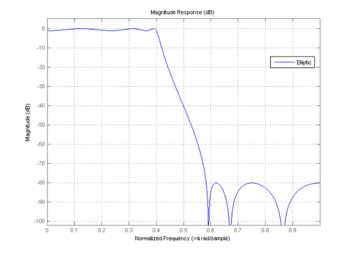
解析パラメーターの変更
ここでは、このフィルターの特徴について詳しく調べます。FVTool によって返されるハンドルには、フィルターと現在の解析の両方を操作するためのプロパティが含まれています。
使用可能なすべてのプロパティを確認するには、GET コマンドを使用します。最初のプロパティは、通常の MATLAB® Figure のプロパティです。残りの 14 個のプロパティは FVTool に固有のプロパティです。その中の 6 個のプロパティ (FrequencyScale から MagnitudeDisplay まで) は解析に固有のプロパティです。
s = get(hfvt);
% Keep the last 14 properties
c = struct2cell(s); f = fieldnames(s);
s = cell2struct(c(end-14:end),f(end-14:end),1)
s =
Legend: 'on'
DesignMask: 'off'
Fs: 1
SOSViewSettings: [1x1 dspopts.sosview]
Analysis: 'magnitude'
OverlayedAnalysis: ''
ShowReference: 'on'
PolyphaseView: 'off'
NormalizedFrequency: 'on'
FrequencyScale: 'Linear'
FrequencyRange: '[0, pi)'
NumberofPoints: 8192
FrequencyVector: [1x256 double]
MagnitudeDisplay: 'Magnitude (dB)'
NormalizeMagnitudeto1: 'off'
FVTool の [解析パラメーター] ダイアログで使用可能なパラメーターはすべて、FVTool オブジェクトのプロパティとしても使用可能です。SET コマンドを 2 つの入力引数と一緒に使用すると、すべての可能な値を返します。
set(hfvt, 'MagnitudeDisplay')
ans =
'Magnitude'
'Magnitude (dB)'
'Magnitude squared'
'Zero-phase'
表示を 'Magnitude Squared' にします。
set(hfvt, 'MagnitudeDisplay', 'Magnitude Squared');

'Analysis' プロパティのすべての可能な値を取得します。
set(hfvt, 'Analysis')
ans =
'magnitude'
'phase'
'freq'
'grpdelay'
'phasedelay'
'impulse'
'step'
'polezero'
'coefficients'
'info'
'magestimate'
'noisepower'
振幅応答は十分に確認できたので、次に群遅延応答について確認します。
set(hfvt, 'Analysis', 'grpdelay');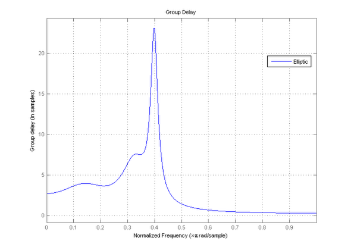
解析を変更したため、GET コマンドは新しい解析パラメーターを返します。
GroupDelayUnits = get(hfvt, 'GroupDelayUnits')
GroupDelayUnits = Samples
2 つの解析結果の重ね描き
ここでは、群遅延とゼロ位相応答が周波数領域でどのように重なるのかを確認します。
FVTool で共通の x 軸 (時間または周波数) を共有する 2 つの解析を重ね描きするには、'OverlayedAnalysis' プロパティを設定します。
set(hfvt, 'OverlayedAnalysis', 'magnitude', 'MagnitudeDisplay', 'Zero-phase', ... 'Legend', 'On');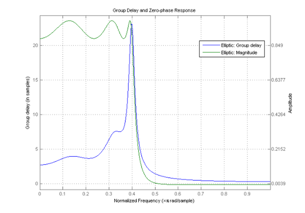
重ね描きした解析をオフにするには、次のように 'OverlayedAnalysis' プロパティを設定します。
set(hfvt, 'OverlayedAnalysis', '', 'Legend', 'Off');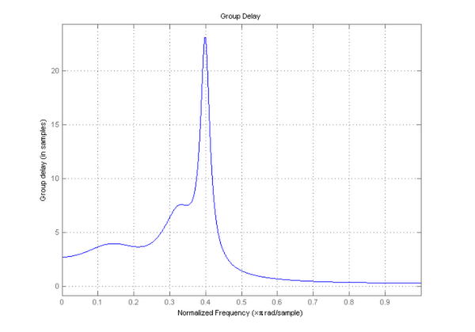
Figure ウィンドウと似た FVTool の操作
FVTool ウィンドウは、通常の Figure ウィンドウと同様に注釈を付けることもできます。
FVTool Figure は通常の Figure ウィンドウと同様に動作します。これによって、MATLAB の関数 grid と関数 axis を使用できます。
grid on
axis([.3 .45 5 25]);
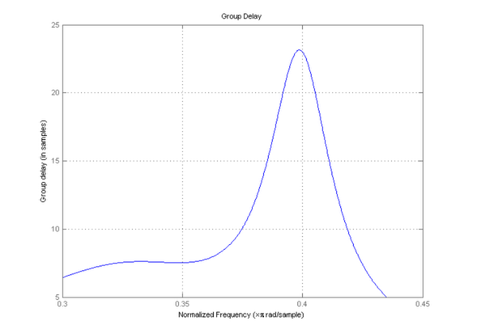 関数 axis は、コマンド ラインからもアクセスできます。これによってタイトルとラベルを変更できます。
title('Group Delay of an Elliptic filter'); xlabel('Frequency (normalized to 1)'); ylabel('Group Delay in samples'); htext = text(.35, 23, 'Maximum Group Delay');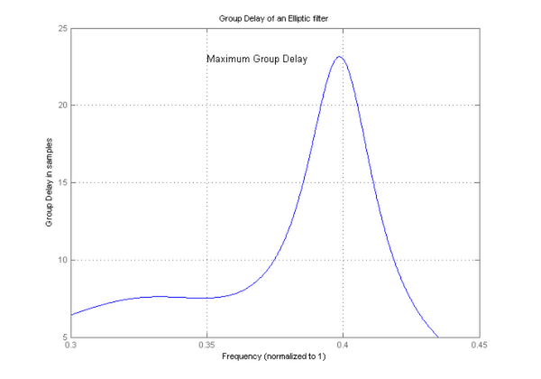
FVTool は、追加された注釈を解析から自動的には削除しません。
delete(htext);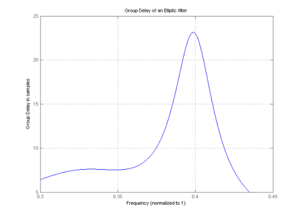
固定小数点フィルター、マルチレート フィルター、および適応フィルターの解析
Filter Design Toolbox™ がインストールされている場合、FVTool と固定小数点フィルター (DFILT)、マルチレート フィルター (MFILT)、および適応フィルター (ADAPTFILT) を使用できます。
FVTool で量子化フィルターを表示します。
set(Hd1, 'Arithmetic', 'fixed'); set(hfvt, 'Filter', Hd1, 'Analysis', 'magnitude', 'MagnitudeDisplay', 'Magnitude (dB)'); legend(hfvt, 'Equiripple Filter');

FVTool でカスケード接続積分器櫛形間引きを表示します。
Hm = mfilt.cicdecim(8,1,4); set(hfvt, 'Filter', Hm); legend(hfvt, 'CIC Decimator:R=8, M=1, N=4');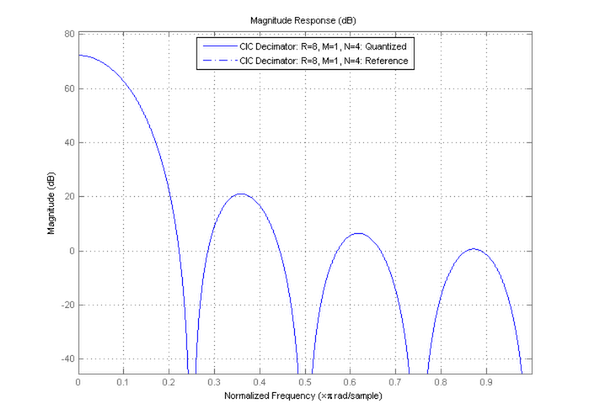
直接型 FIR 最小二乗 (LMS) 適応フィルターを作成します。
H = adaptfilt.lms(32, .008);
ランダム信号をフィルター処理して、係数を適合させます。
filter(H, rand(1,100), [1:100]);
FVTool で LMS フィルターを表示します。
set(hfvt, 'Filter', H); legend(hfvt, get(H, 'Algorithm'));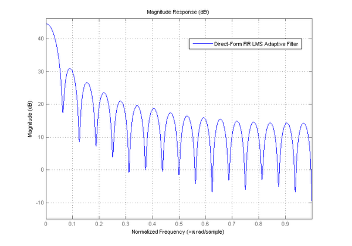
MATLAB の関数 close を使って FVTool を閉じます。
close